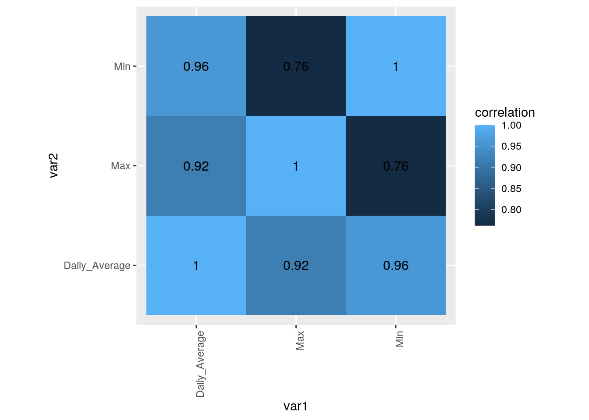
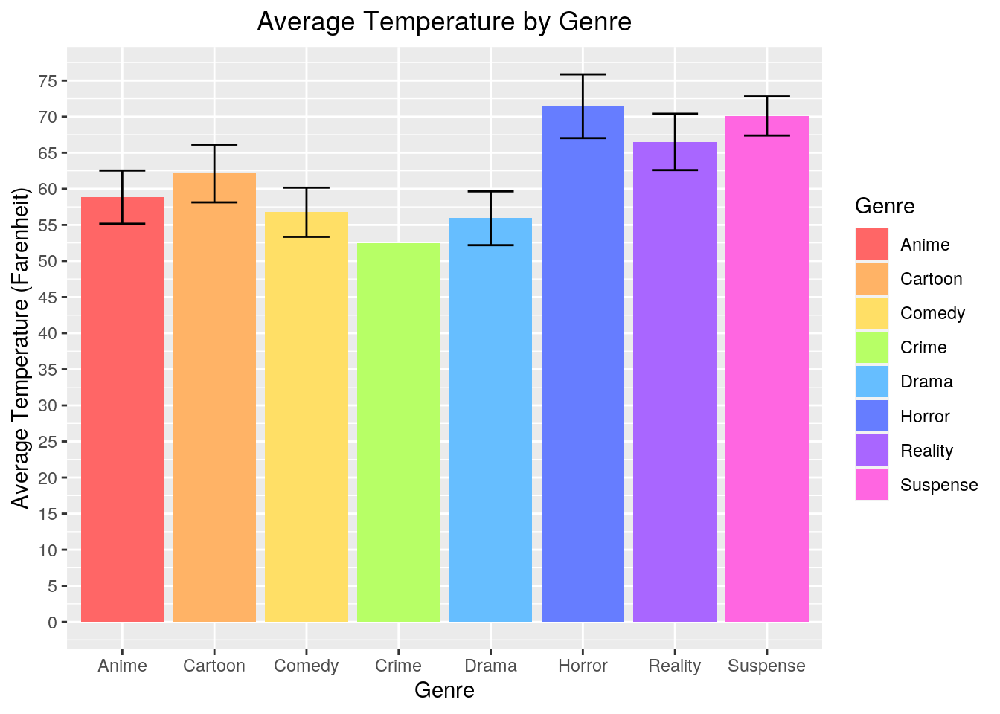
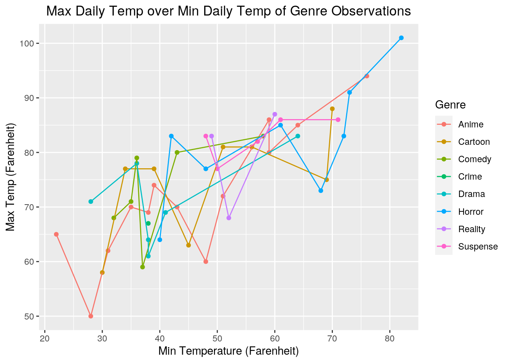
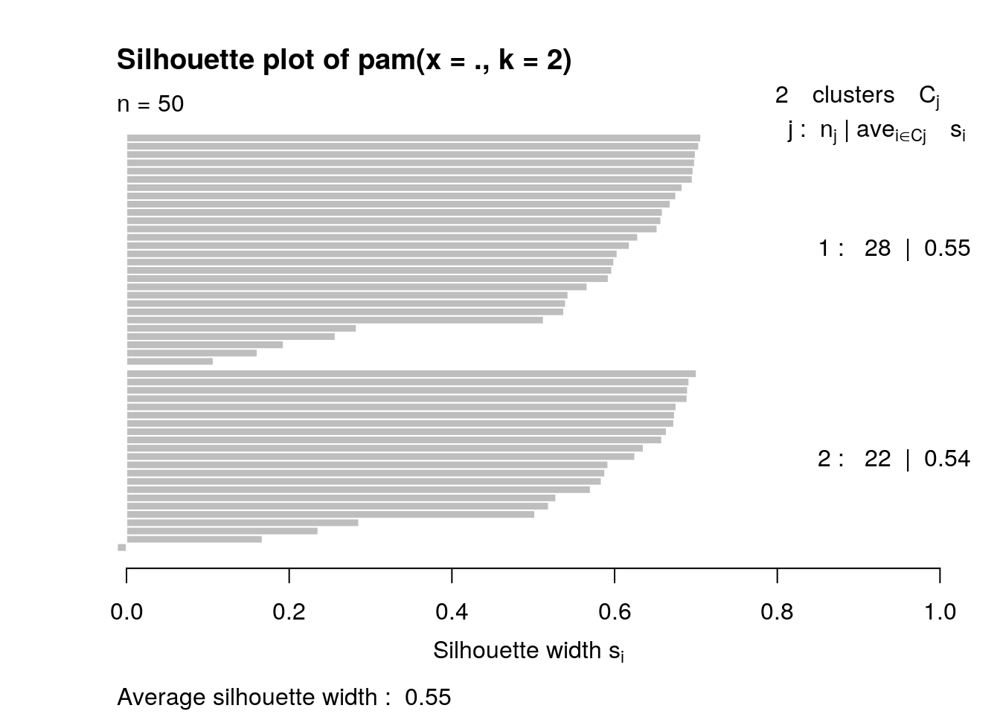
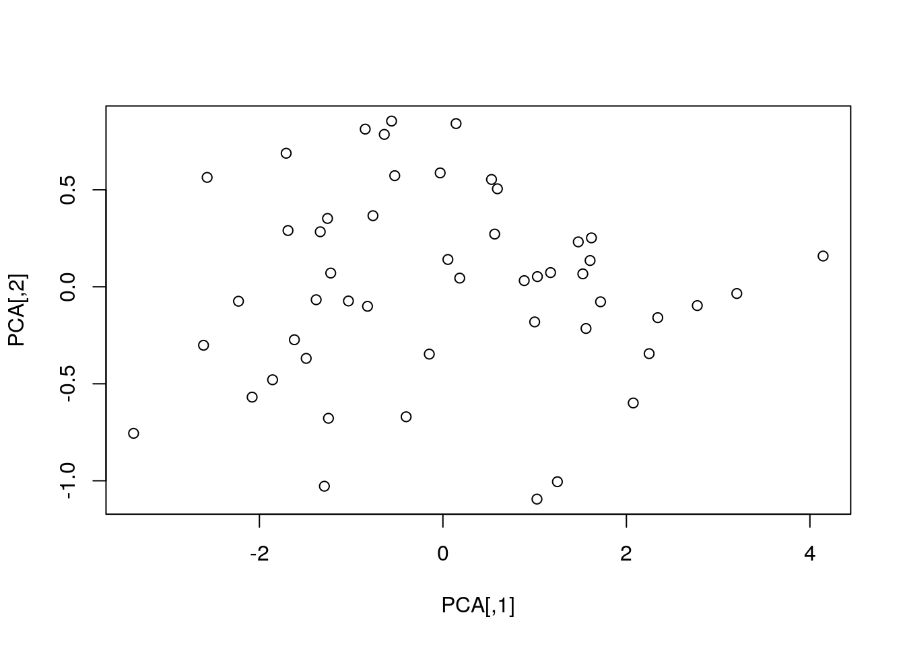
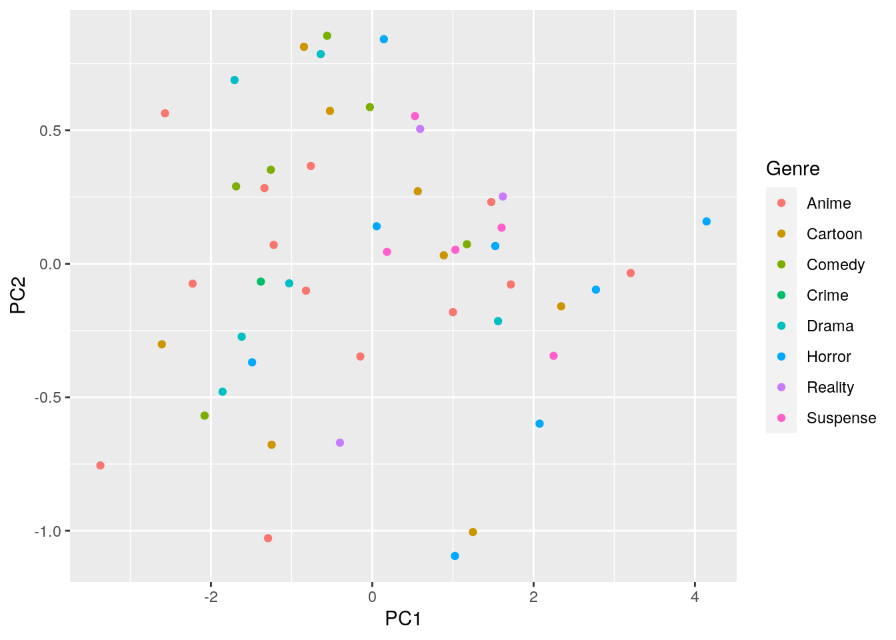

knitr::opts_chunk$set(echo = TRUE, eval = TRUE, fig.align = "center", warning = F, message = F,
tidy=TRUE, tidy.opts=list(width.cutoff=60), R.options=list(max.print=100))0. Introduction
For this project, I chose to work with two datasets. The first dataset is called netflix and it is composed of 50 days of my Netflix viewing history compiled into three columns: Date, Genre, and Run-time. They were acquired from the Netflix website through their download history function; however, the genres assigned to each of the observations were determined by the genre tags that Netflix auto-assigned them. The second dataset is called weather and it is composed of 50 days worth of temperature readings compiled into four columns: date, the maximum temperature of a day (Max), the minimum temperature of a day (Min), and the average temperature of a day (Daily_Average). This data was acquired from the National Weather Service Forecast Office’s online weather database. I thought these datasets were interesting because I think that the weather outside influences how likely you are to prefer to stay inside to watch movies and TV shows. Additionally, I always felt like someone who watches content according to their mood and the weather. When it’s rainy and cold outside, I think that I tend to watch more solemn themed movies and TV shows. By working with these datasets, I think I’ll be able to shed some light into my own viewing habits as they relate to the weather.
1. Tidying: Rearranging Wide/Long
library(tidyverse)## ── Attaching packages ─────────────────────────────────────── tidyverse 1.3.0 ──## ✓ ggplot2 3.3.3 ✓ purrr 0.3.4
## ✓ tibble 3.0.4 ✓ dplyr 1.0.2
## ✓ tidyr 1.1.2 ✓ stringr 1.4.0
## ✓ readr 1.4.0 ✓ forcats 0.5.0## ── Conflicts ────────────────────────────────────────── tidyverse_conflicts() ──
## x dplyr::filter() masks stats::filter()
## x dplyr::lag() masks stats::lag()weather <- read_csv("weather.csv")##
## ── Column specification ────────────────────────────────────────────────────────
## cols(
## Date = col_character(),
## Max = col_double(),
## Min = col_double(),
## Average = col_double()
## )netflix <- read_csv("netflix.csv")##
## ── Column specification ────────────────────────────────────────────────────────
## cols(
## Date = col_character(),
## Type = col_character(),
## `Run-time` = col_double()
## )weather1 <- weather %>% rename(Daily_Average = Average)
un_netflix <- netflix %>% pivot_wider(names_from="Type",values_from="Run-time")## Warning: Values are not uniquely identified; output will contain list-cols.
## * Use `values_fn = list` to suppress this warning.
## * Use `values_fn = length` to identify where the duplicates arise
## * Use `values_fn = {summary_fun}` to summarise duplicatesnetflix1 <- un_netflix %>% pivot_longer(-1, names_to="Type", values_to="Run-time") %>% slice(-(2:10), (-(12:19)), (-(21:27)), (-(21:27)), (-(29:36)), (-(38:45)), (-(47:56)), (-(58:65)), (-(67:72)), (-(74:81)), (-(83:92)), (-(94:101)), (-(103:110)), (-(112:119)), (-(121:127)), (-(129:138)), (-(140:148)), (-(150:156)), (-(158:166)), (-(168:175)), (-(177:184)), (-(186:193)), (-(195:203)), (-(205:209)), (-(211:217)), (-(219:227)), (-(229:237)), (-(239:249)), (-(251:256)), (-(258:262)), (-(264:277)), (-(279:280)), (-(282:290)), (-(292:299)), (-(301:309)), (-(311:322)), (-(324:331)), (-(333:339)), (-(341:348)), (-(350:353)), (-(355:361)), (-(363:372)), (-(374:385)), (-(387:388)), (-(390:403)), (-(405:407)), (-(409:417)), (-(419:426)), (-(428:434)), (-(436:444)), (-(446:459))) %>% select(-`Run-time`) %>% rename(Genre = Type)When I collected my datasets for the weather and my Netflix viewing history, I arranged them so that they would already be tidy once loaded into Rstudio. However, in order to demonstrate that I could tidy my datasets, I decided to untidy my netflix dataset (the untidy version called un_netflix in my RStudio environment) using the pivot_wider function. Once I untidied my netflix dataset, I then retidied it using pivot_longer and then select to take out all of the incomplete pieces from my untidy dataset (the newly tidied dataset is called netflix1 in my Rstudio environment). I also removed the variable Run-time from my netflix dataset because it was causing unnecessary complications within my tidying.
2. Joining/Merging
bigboy <- weather1 %>% left_join(netflix1, by="Date") %>% na.omit()For this part of the project, I decided to join my netflix dataset and my weather dataset by using their date columns as their joining variable. The reason I chose dates to be the joining variable is because all of the observations I had utilized unique dates. There were no repeating dates in either of my datasets. I designed it that way because it would help make the joining process of my datasets easier to do. Moreover, I also thought that it made sense to separate my variables of temperature (max, min, and daily average) and show/movie genre by date. Furthermore, I chose to do a left_join because it keeps all of the rows from the first dataset, weather, and then adds in date matches from the second dataset, netflix. And when there were any rows in the weather dataset that didn’t have a match from the netflix dataset, the left_join automatically gave them an NA value. This let me omit the NAs from my final joined dataset once they were combined.
3.Wrangling
bigboy %>% group_by(Genre) %>% summarize(overall_avg=mean(Daily_Average, na.rm=T))## `summarise()` ungrouping output (override with `.groups` argument)## # A tibble: 8 x 2
## Genre overall_avg
## <chr> <dbl>
## 1 Anime 58.8
## 2 Cartoon 62.1
## 3 Comedy 56.8
## 4 Crime 52.5
## 5 Drama 55.9
## 6 Horror 71.4
## 7 Reality 66.5
## 8 Suspense 70.1bigboy %>% group_by(Genre) %>% mutate(Temp_difference=Max-Min) %>% summarize(median_diff=median(Temp_difference, na.rm=T))## `summarise()` ungrouping output (override with `.groups` argument)## # A tibble: 8 x 2
## Genre median_diff
## <chr> <dbl>
## 1 Anime 27
## 2 Cartoon 26.5
## 3 Comedy 36
## 4 Crime 29
## 5 Drama 27
## 6 Horror 21.5
## 7 Reality 27
## 8 Suspense 25bigboy %>% group_by(Genre) %>% count(Genre)## # A tibble: 8 x 2
## # Groups: Genre [8]
## Genre n
## <chr> <int>
## 1 Anime 13
## 2 Cartoon 8
## 3 Comedy 6
## 4 Crime 1
## 5 Drama 6
## 6 Horror 8
## 7 Reality 3
## 8 Suspense 5bigboy %>% group_by(Genre) %>% filter(Genre=="Anime", Daily_Average<50 | Daily_Average>70) %>% arrange(desc(Daily_Average))## # A tibble: 6 x 5
## # Groups: Genre [1]
## Date Max Min Daily_Average Genre
## <chr> <dbl> <dbl> <dbl> <chr>
## 1 9/3/20 94 76 85 Anime
## 2 9/11/20 85 64 74.5 Anime
## 3 11/9/20 86 59 72.5 Anime
## 4 12/15/20 62 31 46.5 Anime
## 5 12/1/20 65 22 43.5 Anime
## 6 1/11/21 50 28 39 AnimeThe first code groups the data by genre and then creates an overall average temperature of the daily average temperatures for the cases that fall under the 8 different genres. The code following that one groups the data by genre. After that, I created a new column called Temp_difference which contained the maximum temperature of the day minus the minimum temperature of the day. Once I calculated the differences in temperature for each observation, I used summarize to calculate the median temperature differences for each of the 8 different genres. And for the last two pieces of code, I used group_by to group the data by genre. After that, I used filter to narrow down my observations to ones that fall under the anime genre. I chose the filter genre specification to be anime because it had the most counts in my dataset which meant that I consumed a lot of anime media. Once I filtered for anime, I also specified the filter to look at the average daily temperatures that were less than 50 or greater than 70. I wanted to see if I consumed anime often on days that were either considerably colder or hotter (since cold weather and hot weather force us to be indoors). Afterwards, I arranged the resultant data by descending average daily temperature. As it turns out, of the original 13 observations I have for watching anime, only 6 of them fall within my filter requirements for having a daily average temperature less than 50 or greater than 70. This indicates the weather coldness vs warmness doesn’t seem to affect my anime viewing habits based off of this filtration.
bigboy %>% select(Date, Genre, Daily_Average) %>% group_by(Genre) %>% summarize(n_distinct(Daily_Average))## `summarise()` ungrouping output (override with `.groups` argument)## # A tibble: 8 x 2
## Genre `n_distinct(Daily_Average)`
## <chr> <int>
## 1 Anime 12
## 2 Cartoon 8
## 3 Comedy 6
## 4 Crime 1
## 5 Drama 5
## 6 Horror 7
## 7 Reality 3
## 8 Suspense 5bigboy %>% group_by(Genre) %>% summarize_at(c("Max", "Min"), sd, na.rm=T) %>% na.omit()## # A tibble: 7 x 3
## Genre Max Min
## <chr> <dbl> <dbl>
## 1 Anime 11.9 15.7
## 2 Cartoon 9.87 15.1
## 3 Comedy 9.05 9.45
## 4 Drama 8.32 12.2
## 5 Horror 11.2 15.7
## 6 Reality 10.0 5.69
## 7 Suspense 3.70 9.24bigboy %>% group_by(Genre) %>% summarize_at(c("Max", "Min"), sd, na.rm=T) %>% summarize_all(function(x)sum(is.na(x)))## # A tibble: 1 x 3
## Genre Max Min
## <int> <int> <int>
## 1 0 1 1My first code selects the columns Date, Genre, and Daily_Average and makes them into their own subset. Afterwards, I used group_by to group the resulting data by genre. Once I grouped them all into the 8 different genres of my dataset, I used the summarize function to figure out how many distinct values of daily average temperatures there were in each genre. So of my 50 daily average temperatures in my dataset, only 3 of them are repeated temperatures and the rest are unique. My second line of code used group_by to group the data by genre. Once I grouped my data, I used summarize_at to calculate the standard deviations of the maximum and minimum daily temperatures for each genre group. I also used na.omit() because the genre crime returned back NAs for the standard deviations of the maximum and minimum temperatures. The reason why it returned back NAs is because there was only one observation with crime as its genre in my dataset. And finally, my last bit of code in this chunk reaffirms that one of the genres, crime, is the only genre with NAs for the maximum temperature and minimum daily temperatures. The rest of the genres did have actual values for their standard deviations.
4.Visualizing
library(ggplot2)
cormat2 <- bigboy %>% select_if(is.numeric) %>% cor(use="pair")
tidycor2 <- cormat2 %>% as.data.frame %>% rownames_to_column("var1") %>% pivot_longer(-1, names_to="var2", values_to="correlation")
tidycor2 %>% ggplot(aes(var1, var2, fill=correlation)) + geom_tile() + geom_text(aes(label=round(correlation,2)),color = "black", size = 4) +theme(axis.text.x = element_text(angle = 90, hjust = 1)) + coord_fixed()
ggplot(bigboy, aes(x = Genre, fill=Genre)) + geom_bar(aes(y=Daily_Average), stat="summary", fun=mean) + scale_fill_manual(values = c("#FF6666", "#FFB366", "#FFDF66", "#B7FF66", "#66BEFF", "#667DFF", "#A966FF", "#FF66E1")) + geom_errorbar(aes(y=Daily_Average), stat = "summary", width = 0.5) + scale_y_continuous(name = "Average Temperature (Farenheit)", breaks = seq(0, 100, 5)) + labs(title = "Average Temperature by Genre") + theme(plot.title = element_text(hjust = 0.5)) + xlab("Genre")## No summary function supplied, defaulting to `mean_se()`
ggplot(bigboy, aes(x = Min, y = Max, color=Genre)) + geom_point() + geom_line() + scale_x_continuous(name = "Min Temperature (Farenheit)", breaks = seq(0, 100, 10)) + scale_y_continuous(name = "Max Temp (Farenheit)", breaks = seq(0, 100, 10)) + labs(title = "Max Daily Temp over Min Daily Temp of Genre Observations") + theme(plot.title = element_text(hjust = 0.5))
For my data visualization portion of the project, I made three different graphs. The first graph I made was a heatmap showing the correlations between my dataset’s numeric variables. The range of the correlation is rather limited as there isn’t really a large departure in terms of temperature values from the maximum, minimum, and daily average numbers (our range of correlations runs from 0.76 to 1). We can see that when a variable is matched to itself (such as maximum temperature to maximum temperature, minimum temperature to minimum temperature, etc), it is perfectly correlated. However, we start to see a little more variation as we pair up particular variables with different ones.The lowest correlation that we have on our heatmap is 0.76 between the maximum daily temperature and the minimum daily temperature. This makes sense when considering that the daily maximum and daily minimum temperatures do tend to vary notably on a day-to-day basis when accounting for the morning/night time shifts in sunlight and so on.
My other two visuals focused more on presenting my data in a simple but clear manner. The first one that I made was a barchart comparing the average daily temperatures across the genres of content from my Netflix viewing data. I also included error bars to account for the multiple observations that some of my genres had (with crime being the genre with a single observation). With these chart, we can see that the error bars for the anime, cartoon, comedy, and drama genres all fell within the same margin for average daily temperature; meanwhile, the horror, reality, and suspense genres were all within the same margin for their average daily temperature error bars too. This is interesting because it implies that certain genres may be more frequently viewed at particular average daily temperatures. My second visual was a scatterplot that depicted the genres of all my observations by their minimum and maximum temperatures. The purpose of this plot was to see if there were any trends in the genres watched in relation to the maximum and minimum temperature of that day. For the most part, there doesn’t seem to be an overt relationship between genres and their maximum/minimum daily temperature other than generally high temperatures tend to have relatively higher lower temperatures.
5.Dimensionality Reduction
library(cluster)
pam2<-bigboy%>%pam(k=2)## Warning in data.matrix(x): NAs introduced by coercion
## Warning in data.matrix(x): NAs introduced by coercionlibrary(GGally)## Registered S3 method overwritten by 'GGally':
## method from
## +.gg ggplot2bigboy3 <- bigboy %>% select(-Genre, -Date)
pam1 <-bigboy3 %>% pam(k=2)
plot(pam2, which=2)
bigboy3## # A tibble: 50 x 3
## Max Min Daily_Average
## <dbl> <dbl> <dbl>
## 1 69 41 55
## 2 81 51 66
## 3 77 39 58
## 4 83 64 73.5
## 5 64 38 51
## 6 61 38 49.5
## 7 50 28 39
## 8 72 51 61.5
## 9 78 36 57
## 10 71 28 49.5
## # … with 40 more rowsbb <- bigboy %>% select(Max, Min, Daily_Average) %>% scale()
eigen1 <- bigboy %>% select(Max, Min, Daily_Average) %>% cor() %>% eigen()
eigen1## eigen() decomposition
## $values
## [1] 2.759504e+00 2.404957e-01 -1.431601e-16
##
## $vectors
## [,1] [,2] [,3]
## [1,] 0.5597291 0.75049239 -0.3513752
## [2,] 0.5699365 -0.65645266 -0.4942088
## [3,] 0.6015611 -0.07636149 0.7951686eigen1$vectors## [,1] [,2] [,3]
## [1,] 0.5597291 0.75049239 -0.3513752
## [2,] 0.5699365 -0.65645266 -0.4942088
## [3,] 0.6015611 -0.07636149 0.7951686eigen1$values## [1] 2.759504e+00 2.404957e-01 -1.431601e-16PCA <- bb %*% eigen1$vectors
which.min(PCA[,2])## [1] 42plot(PCA)
bigboy3 %>% scale %>% princomp->genre_pca
summary(genre_pca, loadings=T)## Importance of components:
## Comp.1 Comp.2 Comp.3
## Standard deviation 1.6444799 0.48547485 1.793109e-08
## Proportion of Variance 0.9198348 0.08016525 1.093619e-16
## Cumulative Proportion 0.9198348 1.00000000 1.000000e+00
##
## Loadings:
## Comp.1 Comp.2 Comp.3
## Max 0.560 0.750 0.351
## Min 0.570 -0.656 0.494
## Daily_Average 0.602 -0.795bigboy%>%mutate(PC1=PCA[,1], PC2=PCA[,2])%>%
ggplot(aes(PC1,PC2,color=Genre))+geom_point()
After having difficulties with the clustering, I decided to use PCA plotting in hopes of better luck. I knew that the clustering designated my data with 2 clusters so I kept this in mind when working on my PCA plot. In order to create my PCA plot, I first selected my numeric variables (Max, Min, Daily_Average) from my dataset and piped them through the eigen() function. Once I created a vector for this result (called eigen1), I then made a new vector called PCA where I piped my scaled selection of my numeric variables to eigen1$vectors. After that, I plotted a ggplot of my PC1 and PC2 values with genre as my point colors. After running the PCA on the numeric variables of my dataset, it appears that it was difficult to group the different genres based on the principal components calculated. My PC1 was comprised of general temperature statistics (standard deviation, variance, etc.) while my PC2 cluster was about the actual maximum, minimum, and average temperature values I had. I feel like this result isn’t too surprising because weather can vary largely on a day-to-day basis. Additionally, I only had observations of temperatures and netflix genres spanning 50 days. If I had a larger dataset with more observations, I think it would be much easier to figure out groupings for the principal components of the dataset. I also think doing this would fix this problem of having a relatively inconclusive PCA plot so that we have more an interpretation to formulate based on our ggplot of the PCA values.